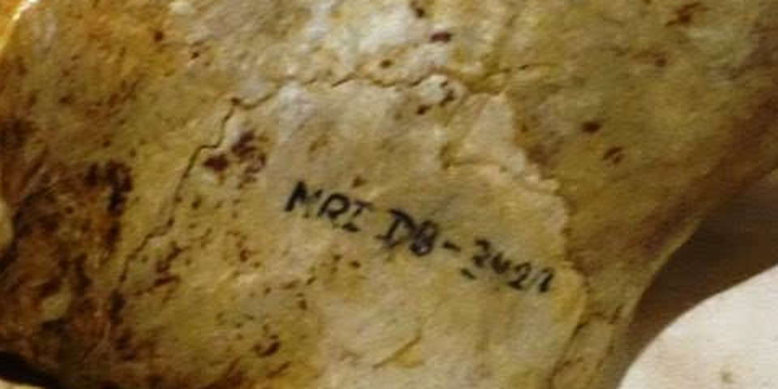
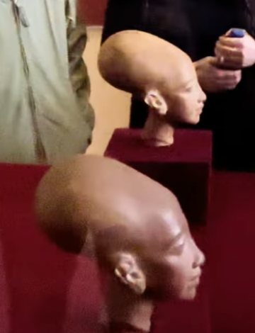
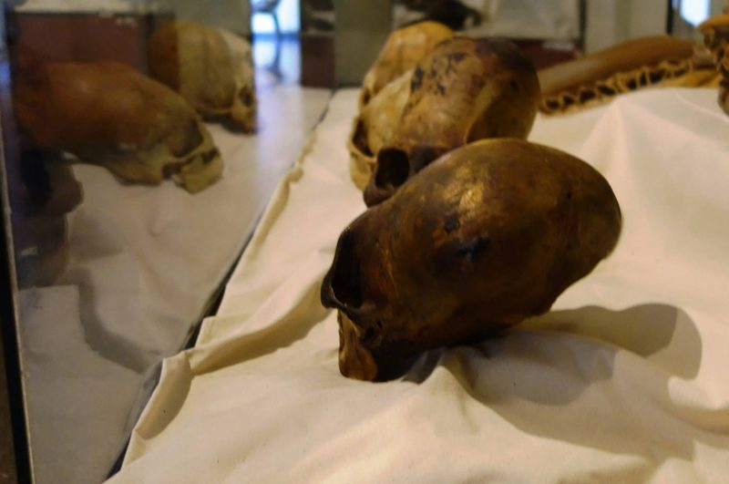

頭蓋骨は何を語るのか

頭蓋骨の側面にインクで MRI DB と書かれています。わずかな文字から、この頭蓋骨がどこから来て、その記録がどこにあるのかがわかるでしょうか。このページは、確認した資料でたどれる範囲まで、その手がかりを追います。

資料が集まった経緯
「世界中を旅してきましたが、今こうして Starchild 2 の頭蓋骨を手にしています。」
- ペルー、2014年11月1日。ヤニはペルーの博物館と個人コレクションで細長い頭蓋骨を撮影しました。写真 01 と 03–11 はこの訪問時の写真で、写真 03 と 04 ではヤニ自身が頭蓋骨を持っています。Travel South の動画では、コレクションの所有者が自分の頭蓋骨について語り、Starchild 2 が名前付きで紹介され、ある博物館の奥の部屋では特別に撮影が許可されました。写真 02 はこれらの動画からの組み写真です。
- カイロ、2024年2月15日。 エジプト考古学博物館で、頭頂部が同じように後方へ大きく伸びた石の頭部に出会いました。
- アーカイブ 2026年。写真、動画、公開資料（博物館ガイド、収蔵品カード、研究）を見直しました。
ヤニのメモ：頭蓋骨、2014年
出発点はリマのミラフローレス地区だった。そこからカルメンが車で私を乗せ、Museo Histórico Paracas での面会を手配してくれた。カルメンは弁護士で、自分の家族の歴史を誇らしげに語っていた。
博物館の常設展示は一般に公開されている。そのほかに所有者は非公開の個人コレクションを持っており、私は2014年11月1日にそこへ入った。私が頭蓋骨を手にしている写真04は、カルメンが撮影した。
L 博物館の館長でありコレクションの所有者でもある人物は、珍しい頭蓋骨によって博物館の資金をまかなっていると語った。それだけでは頭蓋骨が売られていることを意味しない。動画 _IlZYy2Mbpk で彼はスペイン語でこう言う。「No, es que … para mantener este museo」（「…この博物館を維持するために」）。
三つの問い
- 頭蓋骨のコードはどこへつながるのか？インクで書かれた MRI DB と博物館の収蔵品カード。
- なぜ Starchild 2 と呼ばれるのか？名前はメキシコの、より有名な頭蓋骨から借りたものです。
- なぜカイロの石像にも長い頭が繰り返し現れるのか？アマルナ美術とペルーの頭蓋骨を並べて。
この先の内容：髪の残る三つの頭部の展示ケース、コレクション所有者の話、研究が示すこと。11枚の写真すべてと観察記録は、最後の写真一覧にあります。
写真の頭蓋骨は人の遺骨です。このページでは、写真と展示ラベルから読み取れることと、公表された研究が述べることだけを伝えます。写真からは、故人の年齢、病気、出自はわかりません。
写真 01 と 03–11 は 2014年にペルーでヤニ・コルピのカメラで撮影したもので（写真 04 はカルメンが撮影）、2014年11月1日に撮影された博物館の動画と同じ訪問時のものです。写真 02 はこれらの動画からの組み写真です。年は動画の元のファイル名（20141101…）に基づいています。写真 01 と 08 の配置は動画 _IlZYy2Mbpk と qlPq2wTEFEc で同一に見え、Travel South の 2011年のペルー動画には頭蓋骨や博物館の映像はありません。左右は見る人から見た左右です。同じ対象が複数の写真に写っていることがあります。
ラベルの読み方
- T
- 研究結果
- A
- 年代記の記述またはその他の文書
- L
- 伝説または語り
- S
- 推測
頭蓋骨の形から想像上の人物が生まれた様子をご覧ください石の都の顔：13 組の画像ペア。AIイラスト、フィクションであり、研究ではありません。
古い写真、新しい追跡の問い：MRI DB はどこへつながるのか？


- 写真に写っているもの。右側の頭蓋骨の側面に、MRI DB と数字の列が手書きされています。数字は 3421 のようにも見えますが、末尾が不確かなため、読みは保留します。
- 博物館資料との比較。A García Soto による 2018年の報告書の 25 ページに、イカ地方博物館の収蔵品カードが載っています。「Otros códigos e inscripciones」の欄には MRI-DB-3869 とあります。カードの頭蓋骨は Museo Regional de Ica「Adolfo Bermúdez Jenkins」にあり、来歴は Hacienda Chongos、別のコードは MRI-01050-12 と記録されています [2]。
- 結果。コードの形式には一致が見つかりました。同じ MRI-DB の接頭辞がイカの博物館の収蔵品カードで使われています。個体としての一致は未確定です。番号は一致せず、接頭辞だけではヤニが撮影した頭蓋骨を特定することも、報告書の DNA 結果と結びつけることもできません。
- 次の問い。より鮮明な写真から番号全体を確認し、博物館の対応する目録カードを確かめること。
三つの場所を区別しています。 報告書の頭蓋骨と資料記録はイカ地方博物館のもので [2]、ナバロ博物館とは別の機関です [3]。髪の残る三つの頭部の展示ケースとコレクション所有者の話は、パラカスのナバロ博物館のものです（展示ケース）。奥の部屋の名前は動画に映っていません（奥の部屋）。写真 08 の撮影場所は確認されておらず、一つの場所を特定しても資料全体が特定されるわけではありません。ヤニの頭蓋骨写真すべてで逆画像検索を行いましたが（2026年11月20日）、同じ展示ケースやラベルはオンラインのどこにも見つかりませんでした。ナバロ博物館で旅行者が撮った TripAdvisor の写真には、写真 07 と同じ型のガラス棚の展示ケースが写っていますが、そこに同じ頭蓋骨を見分けることはできません [20]。
髪の残る三つの頭部の展示ケース
ヤニの動画 dNgc018HQNA では、三つの頭部がそれぞれ別のガラス台に置かれています。左の頭部の側面を、髪のような暗色の素材が囲んでいます。中央は細長く明るい色の頭蓋骨で、頭頂部に暗い髪の部分があります。右の暗色の頭部はほかより小さく、専用の台に載っています。
ペルー文化省の 2023年の博物館ガイドの 175 ページには、よく似た三つの頭部が同じ順序でガラス台に並ぶ写真があります。動画はパラカスの Museo Histórico Paracas「Juan Navarro Hierro」で撮影されました。ガイドはこの名前で博物館を紹介しており、ナバロ家が運営しています [1]。撮影場所は 2026年にヤニ・コルピが確認しました。イカ地方博物館は別の機関です [3]。ガイドは血縁関係も、共通の墓も、ほかの写真の撮影場所も確認していません。光と角度はガイドの写真と異なります。

コレクション所有者の話
L 動画 dNgc018HQNA（2014年11月1日撮影）の語り手は、パラカス歴史博物館「フアン・ナバロ・イエロ」（Museo Histórico Paracas “Juan Navarro Hierro”）のコレクション所有者です。彼によれば、コレクションは国の遺産ですが、彼の所有物です。彼は、頭蓋骨の一つはアメリカ大陸のものではないと言い、そのDNAは北ヨーロッパ、つまりノルウェー、スウェーデン、フィンランド、ロシアと一致すると述べています。髪の残る三つの頭部の展示ケースについて、彼は父親、母親、赤ん坊が同じ墓で見つかり、父親と母親の髪は赤く、赤ん坊の髪は金色だったと言います。動画の中で所有者は、研究報告書も、検査機関も、試料コードも示していません。
写真の個体に研究コードはあるか？ 見つかりませんでした。展示ケースの頭部には読み取れるコードが見えず、博物館のガイドもDNA研究に触れていません [1]。ガルシア・ソトの報告書では、セロ・コロラドの盗掘された墓から出た頭蓋骨1点（S8）からミトコンドリアのグループHが得られ、報告書によればこれは北ヨーロッパに典型的です。しかし、ミトコンドリアDNAがたどるのは母系の一つの系統だけで、ハプログループHだけでは人を北ヨーロッパに位置づけることはできません。Hは、たとえば北アフリカでも一般的です（Ennafaa ほか 2009）。同じ頭蓋骨の二つ目の試料からはハプログループB5が得られました [2]。同じ頭蓋骨で結果が食い違うことには説明が必要です。報告書は査読を受けておらず、放射性炭素年代も得られておらず、DNAが本当に古いものであることも示していません。このような試料では現代の汚染がよくある説明であり、それを除外しなければなりません（Renaud ほか 2019）。報告書の頭蓋骨はイカ地方博物館の収蔵庫にあり、どれもこの展示ケースの頭部とは結びつけられません。
「Ancient Skulls of Peru: Evidence of an Advanced Human Species?」(aqPy1X1mhGY) や「Ancient Skulls of humanoids: Proof of an Advanced Human Species?」(yIA-Dykw_40) のような疑問形のタイトルは、動画の名前です S 。公表された研究は、別の人類種という考えを支持していません。調査されたパラカスの資料では、頭蓋骨は子どもの頃に頭の形を整えられた人々のものです [4]。


Starchild 2 と奥の部屋
L コレクションとヤニの動画 Investigating the Starchild 2 skull of Peru (Nov 2014) では、幅広く丸い頭蓋骨が Starchild 2 と呼ばれています。名前は、メキシコの別の、より有名な頭蓋骨から借りたものです。二つの頭蓋骨は区別しておくのが適切です：
Starchild 1 · メキシコ
- 名前の由来
- この頭蓋骨はのちにスターチャイルド頭蓋骨と呼ばれるようになりました [7]。有名にしたのは、アメリカの作家で超常現象の研究家ロイド・パイ（1946〜2013年）です。パイは1990年代後半にこの頭蓋骨を世に知らしめ、長年にわたって人間と異星人の混血だと紹介しました [14]。パイはスターチャイルド・プロジェクトを率いており、プロジェクト自身の文章では、1999年2月から研究を調整してきた非公式の研究グループと説明されています [15]。パイの公式サイト lloydpye.com は現在も公開されています [16]。
- 伝えられる由来
- L 話によれば、頭蓋骨は 1930年代初めにメキシコのチワワ地方で見つかりました [7]。発見の話は研究結果ではありません。
- L プロジェクト自身の説明によれば、1930年代にアメリカの十代の少女がコッパー・キャニオン地域の廃坑のトンネルで二体の骨格を見つけ、二つの頭蓋骨をエルパソの家に持ち帰りました。1998年に頭蓋骨はレイとメラニー・ヤング（Ray and Melanie Young）に渡され、二人はパイに参加を求めました。プロジェクトによれば、放射性炭素年代測定で頭蓋骨は約 900 年前のものとされました [15]。
- 個体に結びつく研究データ
- A 雑誌『Skeptical Inquirer』の記事は、1999年と2003年の二つのDNA検査をまとめており、それによればこの頭蓋骨は人間のものです [7]。2003年の分析については、オンラインで公開された本文の写しを読みました。署名入りの報告書原本と写しの真正性は確認されていないため、次の段落ではその写しの内容を説明します。
- A Trace Genetics の2003年8月12日付の検査報告書。その本文はプロジェクト資料の写しとしてオンラインで公開されています。スターチャイルド頭蓋骨の試料（SCS-1）のミトコンドリアDNAは、2回の別々の抽出で、アメリカ先住民のハプログループCと一致し、一緒に提示されたもう一つの頭蓋骨の試料（SA-1）はハプログループAと一致しました。報告書によれば、mtDNAの型が異なることから母子関係は否定され、両者の母親はおそらくアメリカ先住民でした。スターチャイルドの試料からは核DNAを増幅できませんでした [17]。署名入りの原本は閲覧できません。
- L プロジェクト自身の 2011年の報告書によれば、名前を明かさない遺伝学者が mtDNA の断片四つの配列を解読し、プロジェクトは人間との違いを例外的に大きいと解釈しました。報告書によれば、研究者の一部は今のところ匿名のままです [15]。この結果は査読を経た形では公表されていないため、ここではプロジェクトの主張として扱います。
Starchild 2 · ペルー
- 名前の由来
- L コレクションと動画の語り手、Travel South、2014年11月1日。
- 伝えられる由来
- ペルーのコレクション。ヤニはこの頭蓋骨を撮影し（写真 04）、2014年11月1日に動画にも収めました。発見場所はわかっていません。
- 個体に結びつく研究データ
- このページのための調査では、この個体と検証可能な形で結びつけられる公表研究は見つかりませんでした。メキシコの頭蓋骨の DNA 結果をこの頭蓋骨に当てはめることはできません。
二つの頭蓋骨に共通するのは名前だけです。
同じ2014年11月1日、ヤニは許可を得て別の博物館の奥の部屋を撮影しました。そこでは頭蓋骨と布に包まれた遺体が白い布の上に置かれています（qlPq2wTEFEc）。場所の名前は動画に映っていません。写真 05 と 09 の配置はおそらく同じものです。


カイロ 2024：エジプトの似た長い頭
2024年2月15日、カイロのエジプト考古学博物館で、ヤニは頭頂部が後方へ大きく伸びた石の頭部を撮影しました。その形はペルーの頭蓋骨に似ていますが、写真は別の大陸で、ペルーの頭蓋骨の写真（2014年）より約9年後に撮影されたものです。
ヤニのメモ：カイロ 2024
ペルーでの体験に触発されて、私は世界中を旅した。カイロへの旅は、ジュリーがブライアン・フォースターの旅程をもとに企画した。ジュリーは私を、さらに型破りな冒険へ、しかもさらに安く導いてくれた。今、写真を並べてみると、アマルナ彫刻の長い後頭部はペルーの頭蓋骨を思わせる。だが、こちらは彫刻家の様式であり、あちらは人間の骨だ。
ここでのブライアン・フォースターはルートの情報源であり、研究上の出典ではありません。
並べて見る：彫刻と人の遺骨




見るポイント：頭頂部の曲線、額のライン、そして後頭部が耳の後ろへどこまで伸びているか。写真は異なる方向と距離から撮影されているため、正確な比率は比較できません。
長い頭頂部は芸術上の約束事か、実際の頭の形か？ A ベルリンのエジプト博物館の作品解説が答えています。それによれば、娘たちの後方へ伸びた頭は純粋な様式上の手法であり、遺伝的な、あるいは意図的に生じさせた変形の印ではありません [13]。A メトロポリタン美術館の展覧会出版物によれば、美術史家たちは、アマルナの芸術家がまったく普通の身体的特徴を様式上の理由から誇張したと考えてきました [19]。

T アマルナ時代の美術は、ファラオ・アクエンアテンの娘たちを細長い頭で描いています。Global Egyptian Museum によれば、カイロの博物館の珪岩製の頭部 JE 44869 はおそらくアクエンアテンの長女メリトアテンで、1912年に彫刻家トトメスの工房で発見されました [11]。同じ型の王女の頭部がニューヨークのメトロポリタン美術館にあります [12]。カイロの博物館のガイドによれば、JE 44869 は高さ21 cmで1階の第3室に展示されており [18]、同じ工房のもう一つの王女の頭部 JE 44870（黄色の珪岩、19 cm）もカイロにあります [19]。ヤニの写真には二つの頭部が並んでいますが、それがこの二つの作品にあたるかどうかは確認できません。ヤニの写真では作品番号が読み取れないため、彼が撮影した頭部の正確な同定は未確定のままです。
動画で見る：二つの石の頭部、51:22 · 51:31 からの館内ツアー（Travel South: Exploring the Egyptian Museum in Cairo、2024年2月15日撮影）。ペルー側の対応する動画：Investigating Elongated Skulls in a Peruvian Museum（2014年11月1日撮影）。
ペルーとのつながりは見た目だけです。アマルナの頭部は彫刻で、ペルーの頭蓋骨は人の遺骨です。調査されたパラカスの資料では、長い頭は子どもの頃に形を整えた結果と解釈されています（研究の背景）。カイロの写真は 2024年、ペルーの写真は 2014年に撮影されました。これらのペアの AIイラストは石の都のページにあります：ペア 12 と ペア 13（カイロの石の顔とペルーの頭蓋骨）。
S あなたなら何を調べますか？
写真は多くの視聴者が抱く疑問を呼び起こします。ここではそれらを推測としてまとめ、それぞれについて、どのような証拠があれば答えが出るかを示します。
- 細長い頭蓋骨は別の種なのか？
- 個体に結びついた試料コード、目録カード、そして人間の資料と比較した骨格とゲノムの公表された分析が必要です。調査されたパラカスの資料では、頭蓋骨は人間のものです [4]。
- DNA は何を教えてくれるか？
- 最初の一歩は、この特定の頭蓋骨を検査報告書と結びつける試料コードです。それがなければ、動画で語られる DNA の結果（所有者の話）は語りにとどまります。
- 背後に高度な文明があったのか？
- 出土状況、年代測定、遺物が、検証可能な形で公表される必要があります。想像上のバージョンは物語石の都の顔で展開されており、それはフィクションです。
研究から何が言えるか？
| テーマ | 研究が述べること | 出典 |
|---|---|---|
| パラカスの頭蓋変形 | T パラカス・カベルナス（セロ・コロラド、紀元前 550–200 年頃）の死者のうち、159 人の頭蓋骨の形が分類されました。変形は 98 パーセントに見られ、最も多い型は直立板状型の変形でした。この数字はこの研究の死者についてのもので、住民全体についてのものではありません。 | [4] |
| 口蓋と頭蓋冠の形 | T フィレンツェ大学人類学・民族学博物館所蔵のペルーの成人頭蓋骨 19 点、うち 9 点が変形あり、10 点が変形なし。頭蓋上部の形はグループ間で異なりましたが、口蓋の平均的な形には有意な差がありませんでした。研究は口蓋についてのもので、顔の見た目についてのものではなく、標本数も少数でした。 | [8] |
| 地域の DNA | T パルパ地域、パラカス半島、高地の 218 人、紀元前 800 年頃–紀元後 800 年頃。コード領域の結果は 130 人から、制御領域の配列は 104 人から得られました。ナスカの集団は、それに先立つパラカスの集団と遺伝的に近いものでした。集団のデータは、個々の写真の故人の出自を示しません。 | [10] |
| 2018年の報告書 | A ガルシア・ソトの最終報告書：イカ地方博物館の収蔵庫にある頭蓋骨8点、試料30点、そのうち結果が得られたのは5点。放射性炭素年代は得られませんでした。結果（表3）：2点の頭蓋骨からB4、1点からHとR、頭蓋骨S8の別々の試料からHとB5。3点の試料ではDNAの劣化が進みすぎており、1点は分析されませんでした。著者はさらなる分析を求めています。これは報告書であり、査読付き論文ではありません。ヤニの写真の個体との結びつきは見つかりませんでした。 | [2] |
| 開口部と小さな頭蓋骨 | T 頭蓋骨の開口部がどのようにできたか、故人の年齢、形の原因は、写真からは未確定のままです。開口部は人の手で外科的処置、つまり穿頭術によって作られることもありますが、似た開口部は先天的な異常、外傷、感染症、腫瘍、土中での損傷によっても生じます。それらを見分けるには骨を調べる必要があります。 | [6] |
| Starchild という名前 | A 名前は、メキシコのチワワ地方で発見されたとされる頭蓋骨に由来します。Skeptical Inquirer の記事によれば、1999年と 2003年の二つの DNA 検査で、人間の頭蓋骨とされました。ペルーの Starchild 2 については、その結果を結びつける収蔵品カードも研究も見つかりませんでした。 | [7] |
個体を確認するには何が必要か？ S 最も有力な候補は写真 08 の右側の頭蓋骨です（追跡）。コード全体の鮮明な接写か博物館の目録記録があれば、写真を発見場所と試料コードに結びつけられる可能性があります。この結びつきがなければ、年齢、年代、血縁関係、DNAの結果は未確定のままです。
2026年、このテーマで何が研究されているか？
今年公表された二つの研究が、頭蓋変形の研究がどこへ向かっているかを示しています。
- TWard ほか, iScience 2026.研究者たちは、アメリカ大陸の意図的な頭蓋変形 1772 例のデータセットをまとめ、その時間的・地理的なパターンを調べました。モデル化によれば、この慣習はまず中央アメリカに現れ、その後北アメリカと南アメリカに広がりました。輪状型の変形は板状型がすでにあった地域に現れ、急速に広がりました [9]。
- TOxilia ほか, Applied Sciences 2026.ペルーの頭蓋骨 19 点（変形あり 9 点、変形なし 10 点）の三次元形態分析：脳頭蓋の形はグループ間ではっきり異なりましたが、口蓋の形は異なりませんでした。つまりこれらの頭蓋骨では、変形は脳頭蓋に現れましたが、口蓋の平均的な形には現れませんでした [8]。
どちらの研究も、ヤニが撮影した個体を特定するものではなく、エジプトとペルーのつながりを示すものでもありません。Oxilia の結果は、石の都のページに描かれた人物の顔を裏づけるものでもありません。それらはフィクションです。
写真索引：写真 01–11
各写真について、最も興味深い観察を最初に示します。残りの詳細は「その他の観察」で開きます。
01 正面から見た丸い頭蓋骨

上部と眼窩
頭蓋骨の上部は両側へ大きく湾曲しています。両方の眼窩が見えますが、写真には下顎と顔の下部の大部分がありません。このため、頭と顔の見かけの比率が変わります。
その他の観察
写真 04 と 10 との比較
丸い輪郭、残っている眼窩の部分、欠けた顔の下部は互いに一致します。写真に共通する目に見える収蔵品コードはありませんが、写真 01、04、10 はおそらく同じ対象を三方向から写しています。
Starchild という名前の背景
同じ対象はおそらくヤニの動画 _IlZYy2Mbpk にも写っており、その動画のタイトルは頭蓋骨を Starchild 2 と呼んでいます。元の Starchild 頭蓋骨はメキシコのチワワと結びつけられており、二つの DNA 研究（1999年と 2003年）で人間の頭蓋骨とされました [7]。ペルーの頭蓋骨については、その事例と結びつけたり、あだ名を裏づけたりする収蔵品カードは見つかりませんでした。
イラスト 01：プリズムを調整する光学職人（AIイラスト、フィクション）
02 動画の組み写真の中の細長い頭蓋骨二つ

上段と中段の左のコマ
動画 aqPy1X1mhGY の四つのフレームは、同じ明るい色の高い頭蓋骨を複数の方向から写しています。下顎が見えます。上から見ると、頭頂部の形と額の後ろに伸びる部分がよくわかります。
その他の観察
二つ目の動画
中段の右の二コマと下段の左の二コマは、動画 yIA-Dykw_40 からのものです。より暗い表面、異なる横顔、見えている歯が、コマからコマへ対象を追う助けになります。おそらく上段とは別の頭蓋骨です。
右下の隅
三つ目の動画は dNgc018HQNA です。人が明るい色の頭蓋骨を持っています。このフレームからは、ほかの二つのどちらかと同じものかは判断できません。したがって、画像の九つのコマは九つの個体を意味しません。
イラスト 02：石材の荷が路地を通る（AIイラスト、フィクション）
03 手に持たれた細長い頭蓋骨
写真の対象
明るい色の頭蓋骨が両手で横向きに持たれています。顔と歯は右を向いています。後頭部は顔の後ろへ大きく伸び、上へ湾曲しています。指がこめかみと頬の一部を覆っています。
その他の観察
ほかの資料との関係
写真 02 の最後のコマには、手に持たれた似た明るい色の頭蓋骨が写っています。比較しても共通の個体コードは見つかりません。
スケールからわかること
手が対象の大きさをつかむ助けになります。写真にはスケールも三次元の計測もないため、容積や脳の大きさは推測にとどまります。
イラスト 03：継ぎ目を確かめる石工の女性（AIイラスト、フィクション）
04 手に持たれた丸い頭蓋骨：Starchild 2
写真の対象
ヤニ・コルピが両手で明るい色の丸い頭蓋骨の一部を持っています。カメラの方へ傾けられ、眼窩は斜めから見えます。
その他の観察
同定
形と顔の部分の欠損は、写真 01 と 10 の対象に似ています。手のひらは、テーブルの上で撮ったクローズアップよりもスケールをよく伝えます。
未確定のこと
手のひらの大きさや遠近からは、故人の年齢はわかりません。写真からは、子どもの頭蓋骨かどうかも、形が何らかの病気によるものかどうかも判断できません。個体の研究記録や目録カードはありません。コレクションはこの頭蓋骨を Starchild 2 と呼んでいます（Starchild 2 と奥の部屋）。
イラスト 04：種のさやを調べる庭師（AIイラスト、フィクション）
05 横から見た暗色の頭蓋骨

手前の暗色の頭蓋骨
顔の輪郭は左を向き、後頭部は右へ湾曲しています。横からの眺めは、正面からよりも長さをよく示します。この写真では識別用の記号を確実に読み取ることはできません。
その他の観察
後ろのより明るい色の頭蓋骨
頭頂部に不規則な暗い斑点が見えます。似た模様が写真 09 の左側の頭蓋骨にも見えます。展示台と背景の物も写真 09 の配置に似ているため、おそらく同じ展示です。
ガラスへの映り込み
左側のぼやけた横顔はガラスへの映り込みです。追加の個体として数えることはできません。光の色と映り込みも、表面の色合いの見え方に影響します。
イラスト 05：水路の高低差を測る女性（AIイラスト、フィクション）
06 同じ棚の二つの頭蓋骨

左の明るい色の頭蓋骨
頭蓋骨の後部は斜め上へ湾曲しています。頭蓋骨は黒い台に載っています。前にある小さな文字ラベルは、大部分がぼやけていて読めません。
その他の観察
右の表面の暗い頭蓋骨
左のものと比べて、頭頂部の輪郭はより垂直です。下顎が見分けられます。耳のあたりの下に、手書きの数字 161 が見えます。その意味を知るには、コレクションの台帳が必要です。
誰が何を主張しているか
右の頭蓋骨のそばに展示用の表示板があります。表示板の分類は展示側によるもので、個体の来歴を示すものではありません。ガラスには映り込みも見えます。
イラスト 06：布を調べる織り手たち（AIイラスト、フィクション）
07 同じ棚の三つの頭蓋骨

左の頭蓋骨
高く明るい色の頭頂部と狭い額の部分。眼窩、鼻孔、歯列弓が見えます。
その他の観察
中央の頭蓋骨
隣のものと比べて、この頭蓋骨は小さいです。別の透明な台の上に高く置かれています。頭頂部に開口部があり、その縁が見えます。写真からは、開口部がどのようにできたかも、故人の年齢もわかりません。頭蓋骨の開口部の原因を明らかにするには骨を調べる必要があります。似た開口部は、先天的な異常、外傷、感染症、腫瘍、土中での損傷によっても生じうるためです [6]。
右の頭蓋骨
横顔は左を向き、後頭部が写真の右端を占めています。頬骨弓と歯の列が見分けられます。写真からは、三人の間に何らかの血縁があるかどうかの情報は得られません。これは、下で紹介する髪の残る三つの頭部の展示ケースとは別の配置です。
イラスト 07：トウモロコシ市場での出会い（AIイラスト、フィクション）
08 二つの頭蓋骨と手書きのコード
左の頭蓋骨
明るい色の頭蓋骨には赤で囲まれた記入があり、額の側面には黒い文字が見えます。記入の末尾は数字の 18 のように見えますが、記入全体の読みは不確かです。
その他の観察
右の頭蓋骨
頭の側面に、MRI DB で始まる手書きのコードが見分けられます。数字の列は 3421 のようにも見えますが、末尾は保留しておくのが適切です。頭頂部にも記入が見えます。
台帳との比較
同じ MRI-DB の接頭辞は、García Soto の報告書のイカの収蔵品カードにも見られます。たとえば報告書の 25 ページにある MRI-DB-3869 という記入です [2]。報告書の一覧と図版付きのカードには、この頭蓋骨に確実に一致するものは見つからなかったため、報告書の来歴や DNA データをこの頭蓋骨に当てはめることはできません（追跡）。
イラスト 08：門を通って運ばれるガラスの天蓋（AIイラスト、フィクション）
09 展示ラベル Paracas Necrópolis
左の、より細い頭蓋骨
横顔は右のものより垂直で、表面には不規則な暗い模様があります。この向きでは両方の眼窩が見えます。この頭蓋骨は写真 05 の後ろの頭蓋骨に似ています。
その他の観察
右の、より暗い色の頭蓋骨
後頭部は後方へ強く湾曲しています。表面には手で書かれた記入があります。下顎と歯列が横から見分けられます。この頭蓋骨はおそらく写真 05 の手前の頭蓋骨と同じです。
ラベルには tipo という語がある
ラベルは型を示しています。ラベルの位置だけでは、それがどの頭蓋骨のものか、個体がどの墓から来たかはわかりません。Julio C. Tello が 1927–1928年に発掘したワリ・カヤンの墓地は、別の、記録の残る遺跡です [5]。
ヤニの博物館動画にも同じ展示
枝を束ねて作った水平な台は、ヤニの博物館動画 Investigating Elongated Skulls in a Peruvian Museum (Nov 2014) のカバー画像にも見えます（石の都のページのカバー画像）。この共通点は展示の特定に役立ちますが、発見場所と対象物の身元は未確定のままです。
イラスト 09：水車の歌（AIイラスト、フィクション）
10 横から見た丸い頭蓋骨

横からの眺め
写真には、頭頂部から側面へ下りるぎざぎざの縫合線が見えます。その下に眼窩の縁が見えます。写真には顎と歯がありません。
その他の観察
角度が加えるもの
黒い台に載った対象の丸い上部が、横から全体として見えます。写真 01 と合わせると、同じ形が正面と横からでどれほど違って見えるかがわかります。対象はおそらく写真 01 と 04 と同じです。
個体データの限界
写真には来歴のラベルも、日付も、台帳番号もありません。縫合線の見え方、残っている上部の大きさ、下顎がないことだけでは、年齢、形の原因、ほかの個体との関係は決められません。
イラスト 10：石の路地の笛吹き（AIイラスト、フィクション）
11 展示ケース全体を棚ごとに

最上段
左は斜めから見た頭蓋骨、中央は頭蓋骨の上部が高くそびえ、右はより暗い横顔で、顔の一部が画面の外に出ています。
その他の観察
2段目の棚
右には歯が見分けられるとても暗い色の頭部があります。左には撮影者の映り込みが見えます。用いられた保存方法は表面からは特定できません。
3段目の棚
左は明るい色の丸みを帯びた横顔、中央は後方へ大きく伸びた明るい色の頭蓋骨、右は黒い台の上の黄色みを帯びた頭蓋骨。ガラスには後ろにある形が映っています。
4段目の棚
左の対象の後部に角ばった開口部が見えます。中央のものは後部をカメラに向けています。右のものの顔の上に暗い開口部があります。開口部がどのようにできたかは未確定です [6]。
5段目の棚
左は茶色の横顔、中央のオレンジがかった色のものはカメラの方を向いています。右では明るい色の頭蓋骨の上部に暗い開口部が見えます。
6段目の棚
左では明るい表面に小さな暗い点が見えます。中央のものの顔の上にはより大きな開口部があります。右では細長い黄色みを帯びた頭蓋骨が斜め前から見えます。
最下段
前列に、左に茶色、中央に赤茶色、右に明るい色の頭蓋骨があります。棚の下端は画面にぎりぎり収まっています。個体コードは確実には読み取れません。
イラスト 11：段丘都市でのかご交換（AIイラスト、フィクション）
出典
- ペルー文化省：Guía de museos e instituciones museales del Perú 2023、175 ページ（Museo Histórico Paracas「Juan Navarro Hierro」）。出典を開く
- García Soto, Rubén 2018：Proyecto de investigación arqueogenético de cráneos Paracas Cavernas y Paracas Necrópolis de las colecciones del Museo de Sitio de Paracas y del Museo Regional de Ica. Informe final, Lima. 報告書であり、査読付き論文ではありません。表 1 と 3、収蔵品カード 25 ページ。出典を開く
- ペルー文化省：Museo Regional de Ica「Adolfo Bermúdez Jenkins」、博物館の案内ページ。出典を開く
- Gómez-Mejía, J., Aponte, D., Pezo-Lanfranco, L. & Eggers, S. 2022：Intentional cranial modification as a marker of identity in Paracas Cavernas, South-Central Coast of Peru. Journal of Archaeological Science: Reports 41, 103264. 出典を開く
- Arqueología Paracas – Wari Kayan：Acerca de las Necrópolis de Wari Kayan（研究プロジェクトのページ）。出典を開く
- Verano, John W. 2016：Differential diagnosis: Trepanation. International Journal of Paleopathology 14, 1–9. 出典を開く
- Radford, Benjamin 2018: ’Alien’ Mummy Identified By DNA. Skeptical Inquirer 42(4), July–August 2018, pp. 10–11. 出典を見る
- Oxilia, G., Paternostro, F. ほか 2026：Palatal Morphology in Artificially Modified Crania: Evidence for Limited Craniofacial Integration. Applied Sciences 16(17), 8695. 出典を開く
- Ward, S. M., Sánchez-Villagra, M. R., Raymond, C., Lazaro, G. R., Lynch, S. & Wilson, L. A. B. 2026：Intentional cranial modifications in the Americas: The temporal and spatial patterns of potential transmissions and cultural innovations. iScience 29(5), 115643（英語）。doi:10.1016/j.isci.2026.115643 · PMC13141071
- Fehren-Schmitz, L., Reindel, M., Tomasto Cagigao, E., Hummel, S. & Herrmann, B. 2010：Pre-Columbian population dynamics in coastal southern Peru. American Journal of Physical Anthropology 141(2), 208–221. 出典を開く
- Global Egyptian Museum：Head of a princess, JE 44869（英語）。出典を開く
- The Metropolitan Museum of Art：Head of a princess from a group statue, 547692（英語）。出典を開く
- Ägyptisches Museum und Papyrussammlung, Berlin：House altar, Akhenaten, Nefertiti and their three daughters, ÄM 14145（Google Arts & Culture、英語）。出典を開く
- Wikipedia: Lloyd Pye（2026年11月20日閲覧）。出典を見る
- Johnson, Andrew（編）2015：The Starchild Skull. Lloyd Pye の文章（starchildproject.com、lloydpye.com）から編集、Starchild Skull DNA Analysis Report 2011 を収録（英語）。出典を開く
- Lloyd Pye – The Official Website of Lloyd Pye（2026年11月20日閲覧）。出典を見る
- Trace Genetics 2003: Report on the DNA analysis from skeletal remains from two skulls, 12 August 2003. Biblioteca Pleyades のウェブサイトに掲載された写しの本文。出典を見る
- Salah, Samy：Akhenaten. Egyptian Museum in Cairo（博物館ガイド、Internet Archive の本文、英語）、作品 2 Head of a Princess。出典を開く
- Arnold, Dorothea 1996：The Royal Women of Amarna: Images of Beauty from Ancient Egypt. The Metropolitan Museum of Art, New York（カタログ番号 50–51 と L. Green の章 Who Was Who、英語）。出典を開く
- TripAdvisor：Paracas History Museum – Juan Navarro Hierro、旅行者の写真「a large skull (25-60% larger than normal)」（英語）。出典を開く
動画：aqPy1X1mhGY · yIA-Dykw_40 · dNgc018HQNA · _IlZYy2Mbpk · qlPq2wTEFEc（Travel South、2014年11月1日撮影）· _ClDtZ7vcDc（Travel South、2014年10月30日撮影）。
頭蓋骨の形から想像上の人物が生まれた様子をご覧ください石の都の顔
パラカスとワカチナ目的地のページ